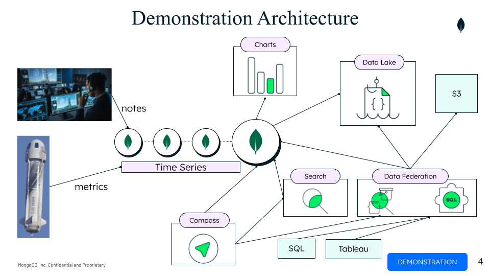

This demonstration shows how the various components of MongoDB's Developer Data Platform (DDP) can be used together to support real-time analytics. It uses an open source data set from a Blue Origin launch along with some made up data.
The demonstration shows how a company could use MongoDB Atlas to manage and perform analytics on the data generated during a rocket launch. A typical rocket launch spans an eight hour period from the time the initial countdown begins until the rocket payload is in orbit. During this eight hour window, approximately 1 million metrics are generated per second by sensors capturing the rocket performance.
While the metrics make up the bulk of the data in this scenario, there are two other sources of data: notes and weather data. Notes are created by both rocket engineers and an automated system. The rocket engineers create notes when they want to mark a time period or situation that they want to remember to revisit after the launch has been completed. An automated system (implemented as Atlas triggers) is continuously watching the parameters as they stream in and creates notes whenever parameters reach thresholds that are out of bounds. Weather data is stored in a S3 bucket and analyzed in combination with the launch data post launch.

The demonstrate consists of 4 parts (or acts):
Atlas Cluster and Data Demonstration of Atlas, the Atlas cluster deployed for the demonstration, and overview of the document model for two main Atlas collections used to store the launch data: launchData and notes.
Real-time analytics Demonstration of how MongoDB can be used to perform real-time analytics on the data during launch.
Search analytics This section of the demonstration focuses on two areas:
Post launch analytics over a variety of MongoDB and non-MongoDB data sources. This section shows how Atlas Data Lake, Data Federation, and Atlas SQL can be used to analyze data post launch. Data is pulled from three data sources: Atlas cluster, Atlas Data Lake, and Data Federation. Data Lake is configured to take daily snapshots of the Atlas cluster so it has a historical record of previous launches. Data Federation is used to create a federated endpoint that allows for the combined analysis of the current launch, historical launches along with the weather data stored in S3. During the demo, this data is analyzed using Compass (MQL), DBeaver (SQL), and Tableau.
The Atlas configuration components consist of:
There are two main collections used in the demo:
This data can be found in the file ~/data/atlas/aerospace.archive.gz and restored to a database using the command below:
mongorestore --uri $CONNECTION_STR --username $DBUSER --password $DBUSER_PASS --gzip --archive=./data/atlas/aerospace.archive.gz
The configuration for the data federation can be found in the dataFederationConfiguration.json file.
The following schema files were created for Atlas SQL:
Use sqlSetSchema to update the schemas
The S3 bucket contains a single folder called SolarWinds. The contents of this folder are all the files found in the json files found in the ~/Data/solar-wind/json directory plus the SolarWindAll20201013.json file. The SolarWindAll20201013.json file contains all the same documents as the ~/Data/solar-wind/json directory, but the dates in the all.json file are set to match the launchData.
Load the LaunchDayPlasma.twb workspace into Tableau
To set up the Tableau connector use the combination of the Federated Endpoint URI plus the database name defined in the Data Federation Endpoint connection configuration. Don't use "myFederatedDatabase".
The following aggregation queries should be loaded into Compass
See this google drive deck for a set of slides summarizing the demo and providing a screenshot of each demo step.